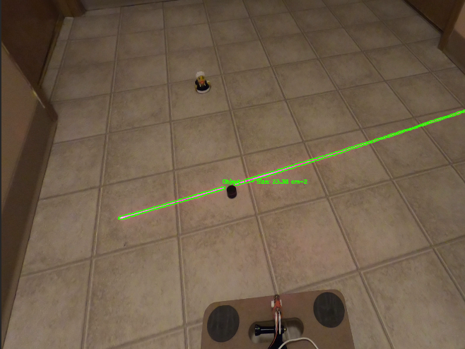
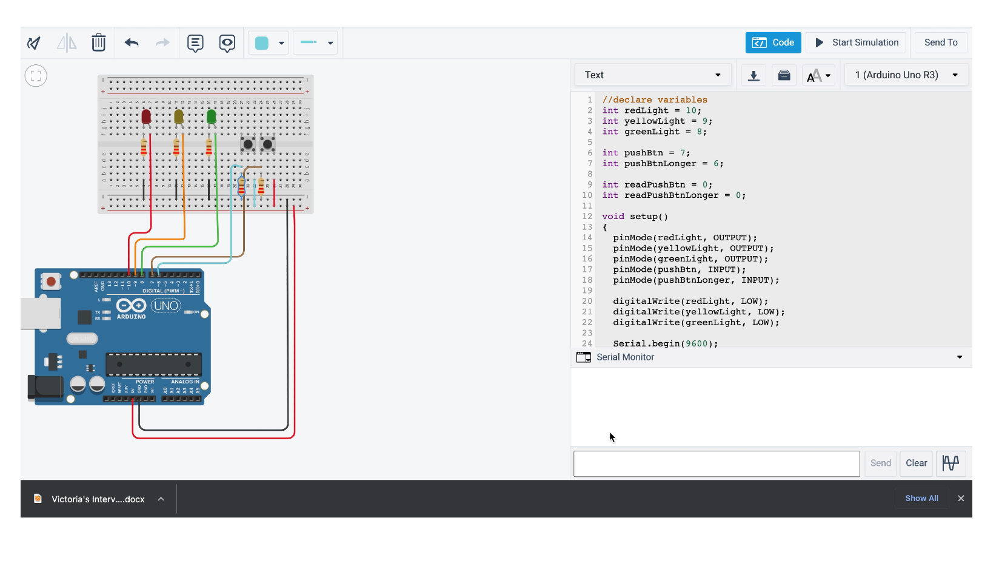
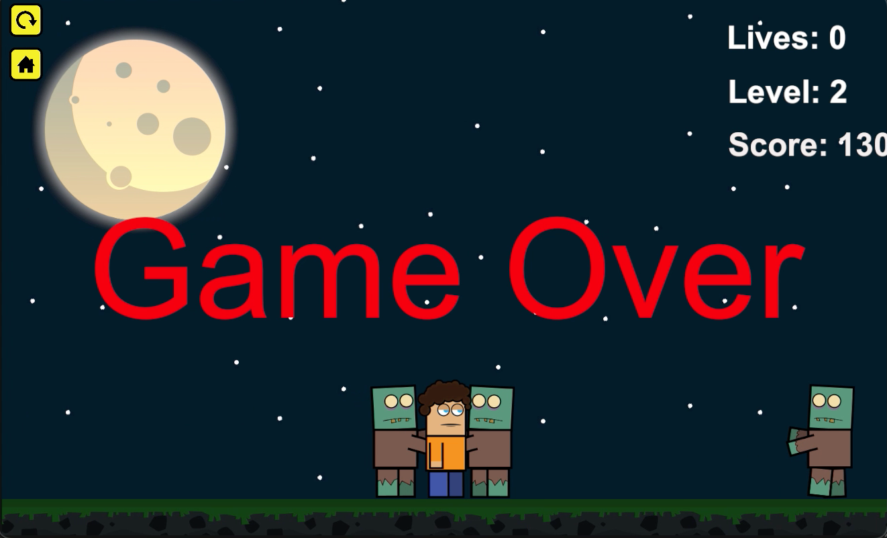
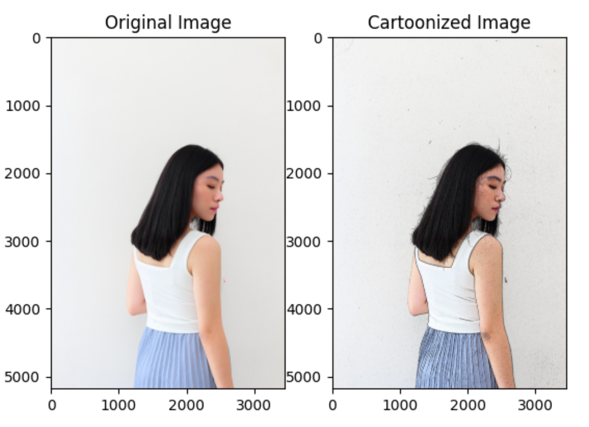
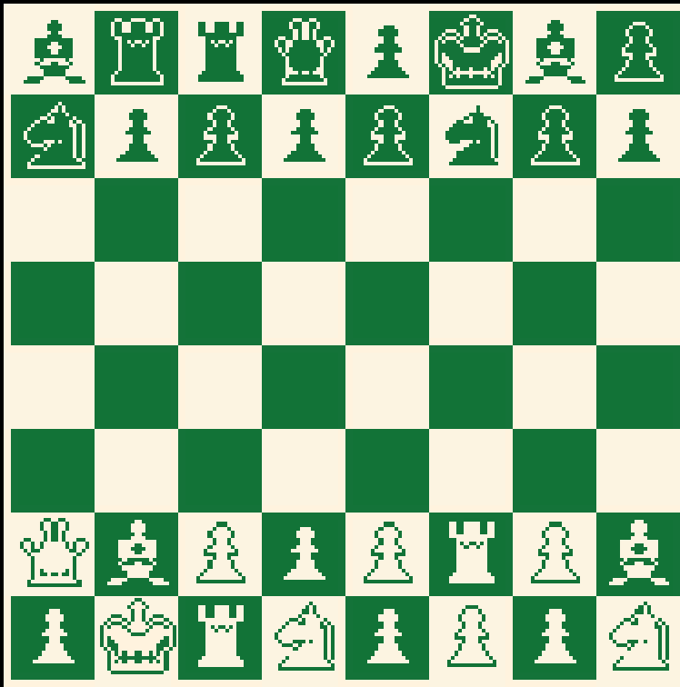

Software Developer
Expected Graduation: Spring 2024
Gpa: 3.69
I'm a dynamic and results-driven software developer with a proven track record of designing and implementing innovative solutions.
Committed to achieving excellence in collaborative environments, I bring strong organizational and analytical
skills to every project.
With a passion for coding and a keen eye for problem solving, I am
dedicated to pushing the boundaries of what technology can achieve.
I am excited to leverage my technical expertise, creativity, and commitment to excellence in
contributing to innovative software development projects. Seeking a challenging and dynamic role
where I can continue to expand my skill set and make meaningful contributions to the world of
technology.
Project Experience

I worked on this project for Aerium Analytics, a Calgary based organization leveraging drone technology, as a capstone project for my BCS degree.
Aerium Analytics was interested in investigating an alternative approach involving the utilization of a collimated line, grid, or point array
laser as a rapid means of identifying surface irregularities, such as objects, on a relatively flat subject area.
I completed the primary objective of this project by designing an algorithm with the capability of identifying deflection in
laser light both in light and dark settings with an estimation of size.

I enhanced the functionality of the prevailing traffic light emulator software,
coded in assembly language, to optimize the pedestrian experience within the traffic management system.
The original code, rooted in the EMU8086 emulator, lacked provisions for pedestrian crossing.
I introduced a feature to facilitate extended crossing times specifically tailored for individuals
with disabilities or the elderly, ensuring a more inclusive and pedestrian-friendly traffic congestion
system.

In collaboration with my peers, we designed a compelling 2D Unity game featuring procedural content
generation to deliver a dynamically evolving gameplay experience. I crafted the game rules, mechanics,
and orchestrated how the characters within the game interact with one another.
Titan Takedown immerses
players in an intense battle against waves of monsters, dynamically introducing challenges.
These monsters employ varied speeds and strengths, dynamically adjusted according to the game
level. Additionally, strategic power-ups are strategically placed at random locations on the
platform, further enhancing the player's tactical engagement.
Let's Connect stands as an Android Studio-developed mobile application, presenting an online chatting
service tailored for the academic community, targeting college students and professors.
Serving as a
collaborative platform, the app fosters continuous connectivity among students and professors,
facilitating real-time communication for academic and school-related matters. This seamless integration
allows for the immediate resolution of problems and concerns within the academic context.

The goal of my project was to turn a regular image into a stylized cartoon representation by applying a playful and artistic effect.
I did this using the OpenCV library.
The implementation of this filter involved the use of processing techniques like grayscale image conversion,
bilateral filtering, edge detection using the Laplacian operator, and binary mask creation.

I endeavored to innovate the conventional game of chess by leveraging the potential advantages of
randomized piece positions.
Employing procedural content generation, I implemented a method to
introduce variability into each gameplay session, providing players with a fresh and unique experience.
This involved integrating the randomized piece positioning procedure into the established architecture
of standard chess, ensuring a dynamic and novel gaming encounter with distinct starting positions for
chess pieces in every gameplay instance.

I undertook the development of this website utilizing the WordPress platform as a personal endeavor aimed at realizing my entrepreneurial aspirations..

I worked on this website from scratch as a personal project to exercise my website development skills.